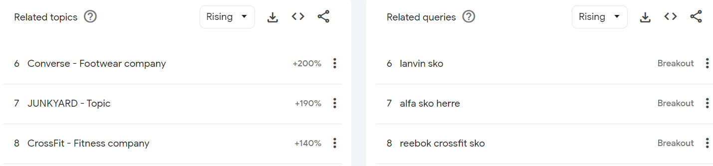
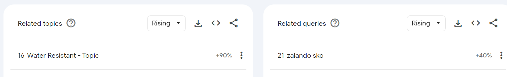
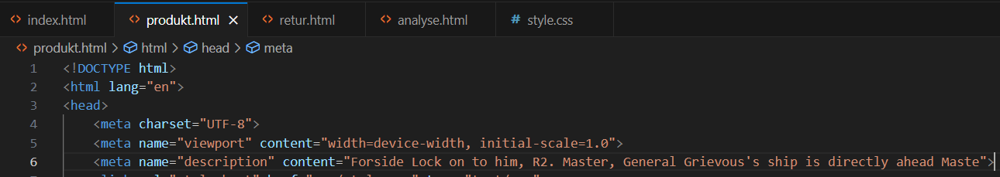
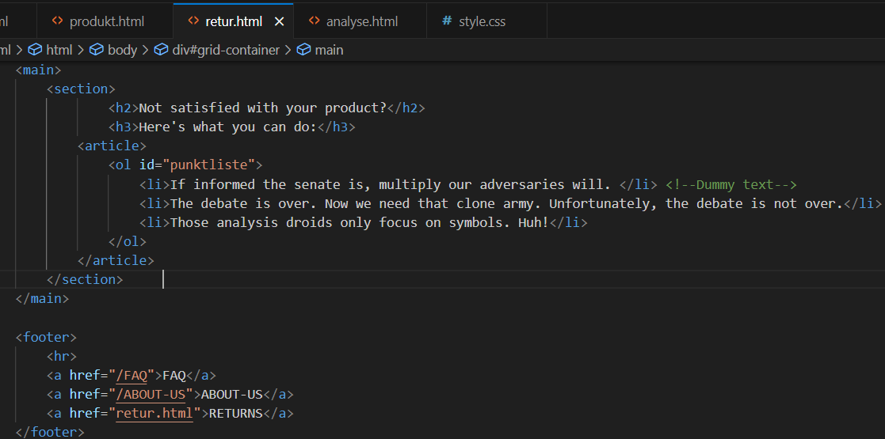
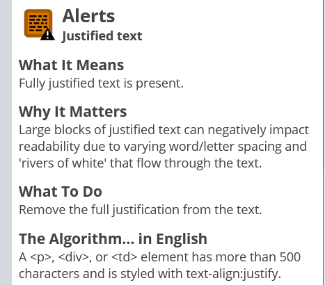

Nøkkelord:
women's shoe, trapes sko, camper sko, gucci sko, velger disse pga. det er forskjellige typer sko og det er interesant å se hva folk er etter, flere marke sko
rebook crossfit sko og crossfit som et vanlig søk,valgte de pga. forskjellige sport betyr forskjellige sko typer, mange driver med sport, ergo forskjellige sport sko blir søkt opp. alpa sko herre
sko tørker, sko punkt,grunn: mer generelt er noe en kan tenke på hvis en har en sko business
water resistance og zalando sko, grunn: zalando er en meger konkorent og noe mer generelt som flere ser etter
rugged gear sko, jordan's,grunn: bra lagde sko
marke sko
vans, piggsko, fjellsport, tøffe sko
SEO:
78 CEO forside første skjermbilde, snakker om manglende meta tagger
CEO forside andre skjermbilde, snakker om linkene i footer som burde inkluder href tagger hvis en bruker en a tag
CEO forside tredje skjermbilde, snakker om størrelsen på linken, de må være store nok eller ha space rundt dem for å være lett klikkbare, 48px48p
77 CEO produkt side første skjermbilde, snakker om manglende meta tagger
CEO produkt side andre skjermbilde, snakker om linkene i footer som burde inkluder href tagger hvis en bruker en a tag
CEO produkt side tredje skjermbilde, snakker om størrelsen på linken, de må være store nok eller ha space rundt dem for å være lett klikkbare, 48px48p
75 CEO retur side første skjermbilde, snakker om manglende meta tagger
CEO retur side andre skjermbilde, snakker om linkene i footer som burde inkluder href tagger hvis en bruker en a tag
CEO retur side tredje skjermbilde, snakker om størrelsen på linken, de må være store nok eller ha space rundt dem for å være lett klikkbare, 48px48p
FORBEDRING:
meta tag forside
meta tag produkt side
meta tag retur side
href tag forside

href tag produktside
href tag retur side
legger til en footer a i css for å forandre størrelsen på linker 3rem=48dp og 10px margin for at uilike skjermstørrelser er klikkbare
ceo forside 100
ceo produkt side 100
ceo retur side 100
UU:
UU forside første skjermbilde, hviser alle feilene på side
UU forside andre skjermbilde, snakker om lav kontrast mellom bakgrunnsfarge og tekst farge
UU forside tredje skjermbilde, forsetter om algoritmen i kontraster, tekst med midre kontrast ratio enn 4.5:1, større tekst med 18 eller 14 punkt kontrast ratio mindre enn 3:1
UU forside fjerde skjermbilde, snakker om en stor tekst blokk som all er justify text som kan være dårlig å lese
UU produkt side, samme link flere ganger går til samme sted, gjøre det vansklingere for tastatur og skjermlesere brukere
UU Retur side hadde samme problemer som produkt side
FORBEDRING:
endret farge på klikkbare linker for bedre kontrast
endret text til å ikke være justify
la sammen lenken til 1 klik
på produkt side og retur side
UU ingen erros
| chatGPT:
SEO-vurdering:
UU-vurdering:
CSS kode:
|
lighthouse:
midre detalijert, 3 feil: manglende meta tagger som chatgpt også nevner, linker som burde inkludere href, og størrelsen på linkene |
webaim:
gjorde sitt jobb ved å gi tilbake meldinger på UU:
|
|---|